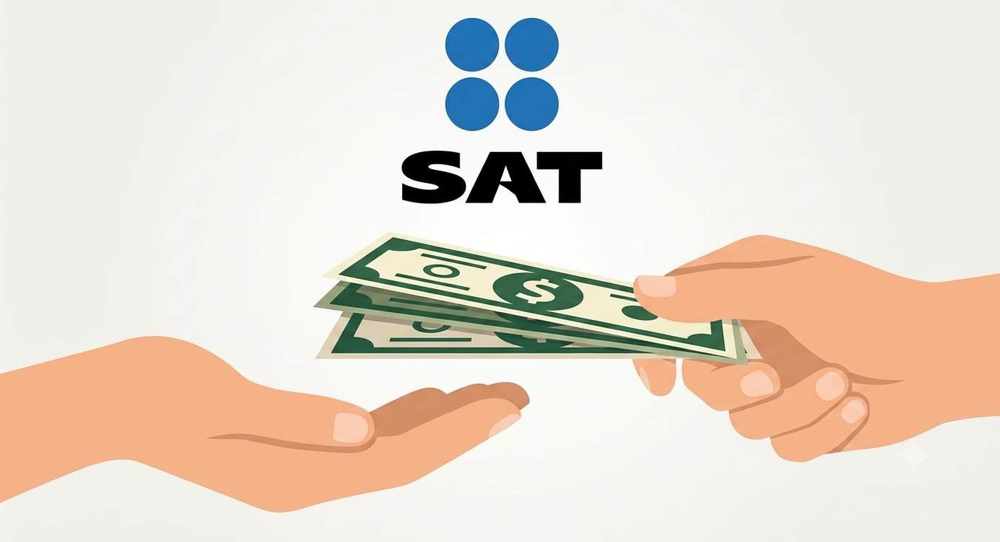
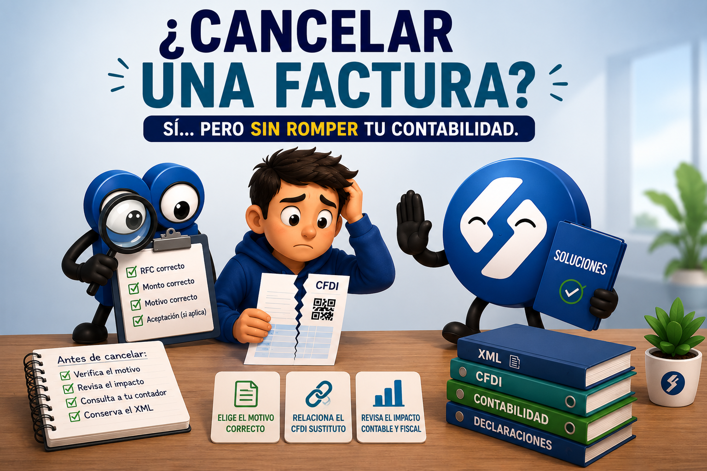
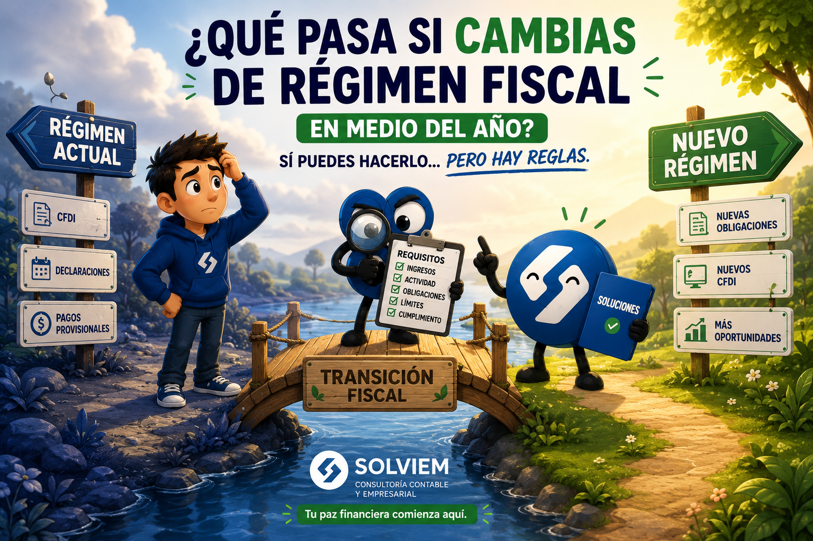
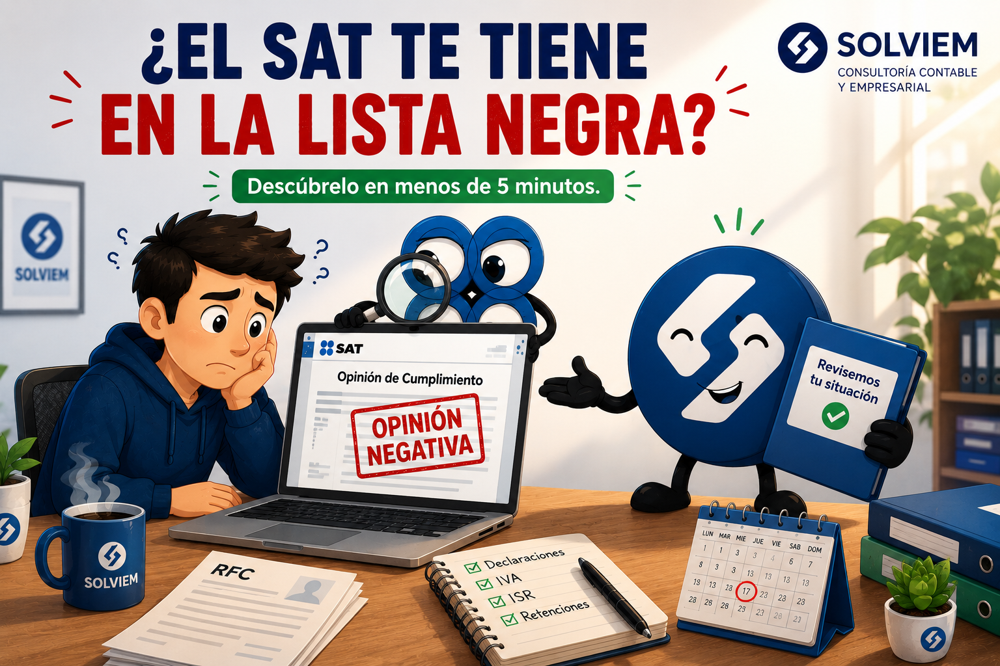
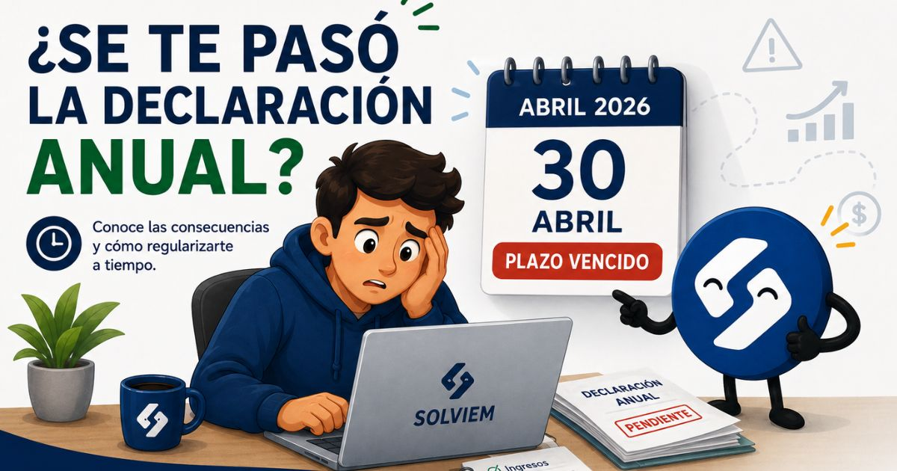
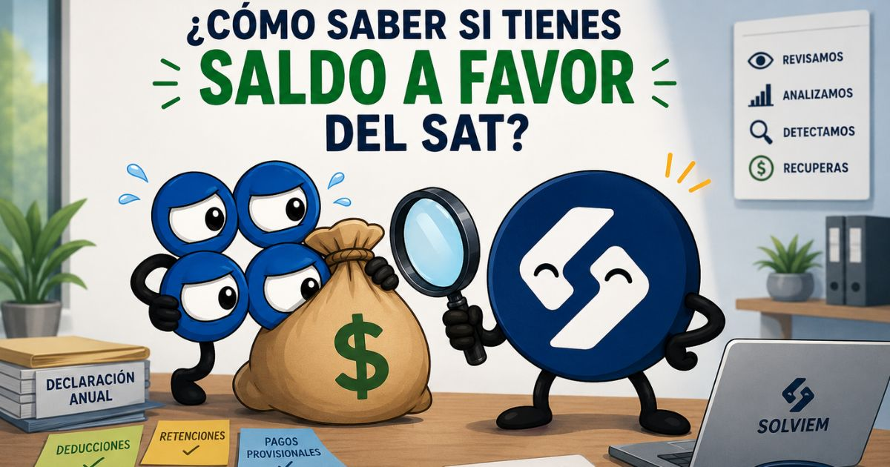

Blog de Solviem
Consejos prácticos de contabilidad, SAT y finanzas para que mantengas tu negocio en regla y tu billetera tranquila.
01 de agosto, 2026
El Gran Obstáculo para Cobrar tu Saldo a Favor: Tramitar tu Contraseña del SAT
Puedes tener años de saldo a favor sin cobrar por un trámite que toma veinte minutos desde tu casa. Te explicamos cómo dar el primer paso.
Leer artículo →
24 de julio, 2026
¿Qué Pasa si no Presentas tu Declaración Anual a Tiempo?
Si se te pasó la fecha para presentar tu declaración anual, la buena noticia es que el trámite no desaparece: sigue disponible, la mala noticia es que esta obligacion no desaparece con ignorarla. Aquí te explicamos exactamente qué qué puedes hacer hoy mismo para resolverlo sin que se convierta en un problema mayor.
Leer artículo →
17 de julio, 2026
Cómo Cancelar una Factura del SAT sin Complicar tu Contabilidad
Cancelar un CFDI es fácil, pero mal hecho puede alterar declaraciones ya presentadas. Te explicamos cómo hacerlo sin generar dolores de cabeza contables.
Leer artículo →
10 de julio, 2026
¿Qué Pasa si Cambias de Régimen Fiscal en Medio del Año?
Sí se puede, pero puede complicar tu declaración anual. Te explicamos cuándo conviene esperar a enero y cuándo tiene sentido cambiarte ahora mismo.
Leer artículo →
3 de julio, 2026
¿Cómo Saber si el SAT te Tiene en la Lista Negra?
El SAT tiene un documento oficial que dice exactamente si estás en riesgo fiscal. Te enseñamos a consultarlo en 5 minutos y qué hacer si el resultado no es el que esperabas.
Leer artículo →
26 de junio, 2026
¿Qué Pasa si No Presentas tu Declaración Anual a Tiempo?
Multas, recargos e intereses que crecen cada mes — esto es lo que genera el SAT cuando no declaras a tiempo, y cómo regularizarte antes de que sea peor.
Leer artículo →20 de junio, 2026
7 Errores Fiscales que Cometen los Freelancers en México
Desde no guardar facturas hasta confundir regímenes fiscales — estos son los errores más comunes que le cuestan dinero a los freelancers ante el SAT, y cómo evitarlos.
Leer artículo →
13 de junio, 2026
¿Cómo Saber si Tienes Saldo a Favor del SAT?
Muchas personas dejan dinero sin reclamar simplemente porque no saben que tienen derecho a una devolución. Te explicamos cómo identificarlo y qué pasos seguir.
Leer artículo →